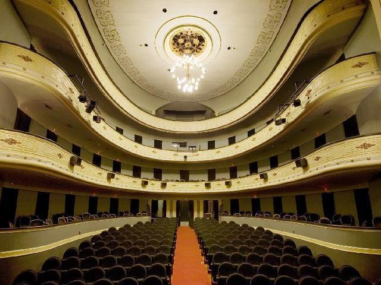
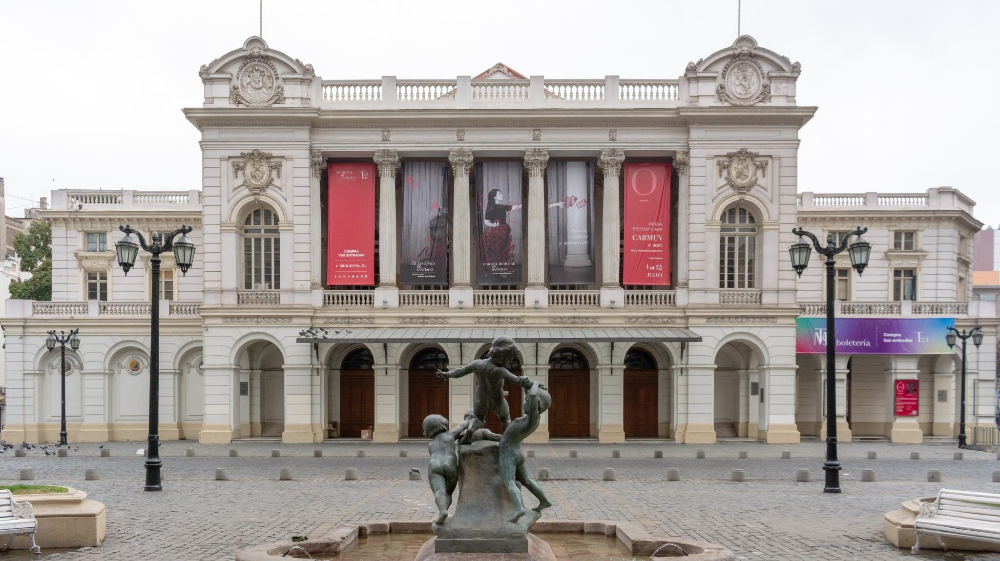
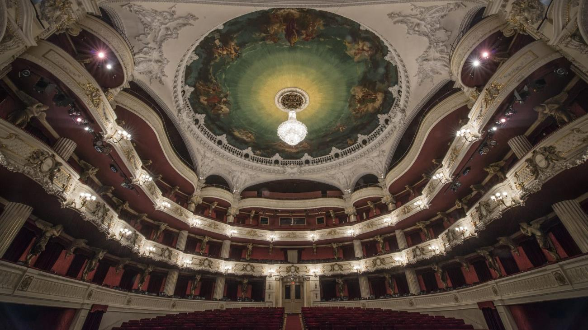
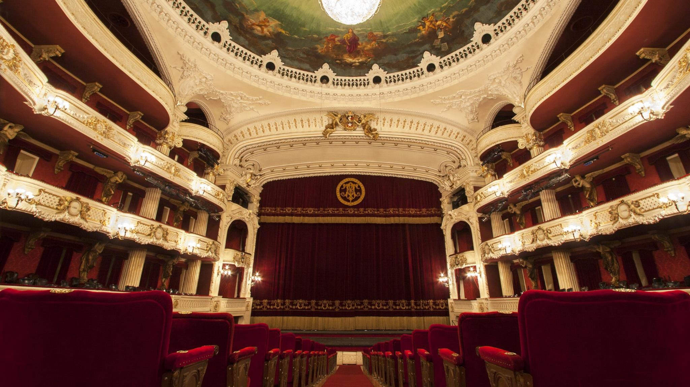
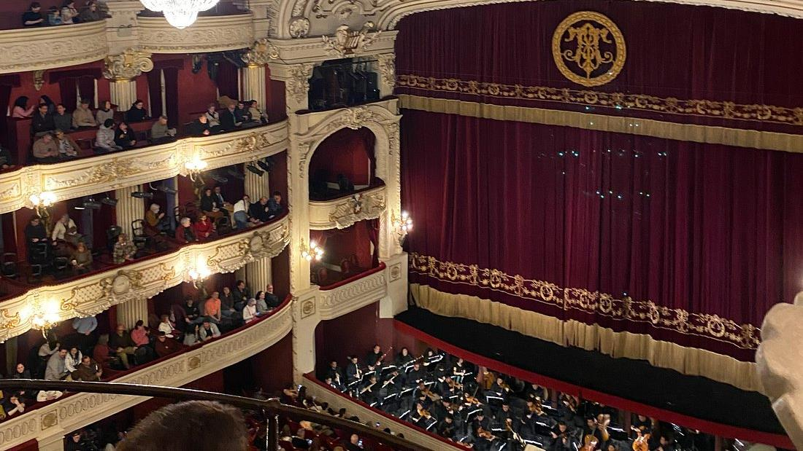

Alberto Varela
Teatro acogedor y con encanto, buena acústica y cómodo. Buenas instalaciones, en el centro de la ciudad a escasos metros de la Catedral de Santiago.
Rúa Nova, 21, 15705 Santiago de Compostela, A Coruña
El teatro se sitúa a 15 minutos caminando de la estación de tren y a apenas 5 minutos de la Catedral de Santiago, por lo que está muy bien ubicado para combinar cultura y visita turística.
En este espacio se desarrollan festivales como Cineuropa o Curtocircuíto, además de una programación estable de teatro, danza y propuestas musicales.

Teatro acogedor y con encanto, buena acústica y cómodo. Buenas instalaciones, en el centro de la ciudad a escasos metros de la Catedral de Santiago.
Si bien la entrada engaña a simple vista, el teatro es grande y precioso. La programación cultural es excelente. Buena iluminación y buen sonido para el teatro más importante de Santiago.




Dirección: Rúa Nova, 21, 15705 Santiago de Compostela, A Coruña.